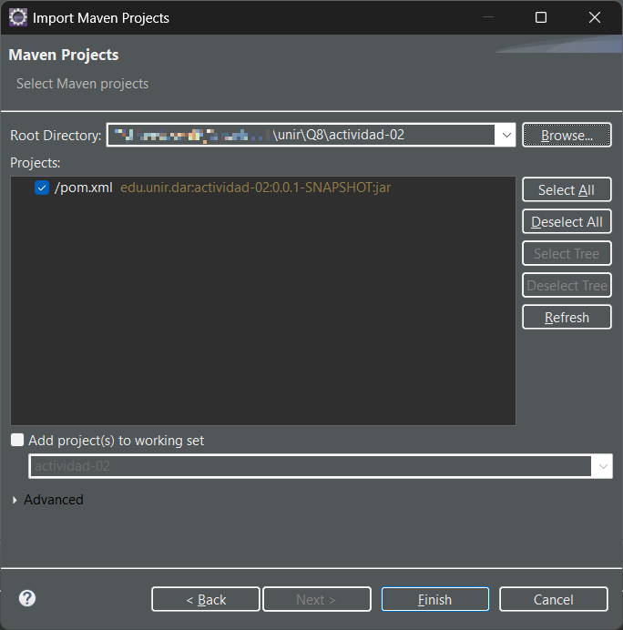

Spring Boot es un framework de desarrollo para aplicaciones Java que simplifica la creación de servicios web, APIs REST y microservicios. Se basa en el ecosistema de Spring y permite iniciar proyectos rápidamente con una configuración mínima, gracias a su filosofía de “convención sobre configuración”. Spring Boot incluye un servidor embebido (como Tomcat), herramientas de monitoreo, integración con bases de datos, y soporte para pruebas, todo listo para usarse desde el primer momento.
Spring Boot permite crear aplicaciones web, REST APIs y microservicios de manera rápida y eficiente en Java.
Entre sus principales aplicaciones encontramos: desarrollo backend, microservicios, aplicaciones empresariales, APIs RESTful.
Aunque se apoya principalmente del lenguaje de programación Java, también puede usarse con Kotlin o Groovy.
Se utilizó la herramienta spring initializr (https://start.spring.io) para crear un proyecto con las siguientes opciones:
Lo anterior genera el template del proyecto en un archivo comprimido que se descargó localmente y se descomprimió para posteriormente ser importado en Eclipse:
El proyecto presentó una única clase principal con la configuración predeterminada:
package edu.unir.dar.actividad_02;
import org.springframework.boot.SpringApplication;
import org.springframework.boot.autoconfigure.SpringBootApplication;
@SpringBootApplication
public class Actividad02Application {
public static void main(String[] args) {
SpringApplication.run(Actividad02Application.class, args);
}
}
Se creó una clase controlador para exponer un servicio web en el path /hola-mundo de la siguiente manera:
package edu.unir.dar.actividad_02.controller;
import org.springframework.web.bind.annotation.GetMapping;
import org.springframework.web.bind.annotation.RestController;
@RestController
public class AplicacionUnir {
@GetMapping("/hola-mundo")
public String hola() {
return "Hola desde la Aplicacion UNIR! :)";
}
}
Los aspectos para resaltar de la clase anterior son las anotaciones @RestController, que habilita a la clase como un controlador, permitiendo exponer servicios web, y la anotación @GetMapping, que define un servicio GET con la dirección /hola-mundo.
Para probar la aplicación, se ejecutó la clase principal del proyecto haciendo clic derecho sobre dicha clase eligiendo “Run as > Java Application” dentro de menú contextual:
Se observa la siguiente salida en la consola del IDE:
. ____ _ __ _ _
/\\ / ___'_ __ _ _(_)_ __ __ _ \ \ \ \
( ( )\___ | '_ | '_| | '_ \/ _` | \ \ \ \
\\/ ___)| |_)| | | | | || (_| | ) ) ) )
' |____| .__|_| |_|_| |_\__, | / / / /
=========|_|==============|___/=/_/_/_/
:: Spring Boot :: (v3.5.3)
2025-07-14T18:37:35.366-04:00 INFO 35628 --- [actividad-02] [ main] e.u.d.a.Actividad02Application : Starting Actividad02Application using Java 21.0.3 with PID 35628 (C:\Users\user\Downloads\unir\Q8\actividad-02\target\classes started by user in C:\Users\user\Downloads\unir\Q8\actividad-02)
2025-07-14T18:37:35.369-04:00 INFO 35628 --- [actividad-02] [ main] e.u.d.a.Actividad02Application : No active profile set, falling back to 1 default profile: "default"
2025-07-14T18:37:36.125-04:00 INFO 35628 --- [actividad-02] [ main] o.s.b.w.embedded.tomcat.TomcatWebServer : Tomcat initialized with port 8080 (http)
2025-07-14T18:37:36.138-04:00 INFO 35628 --- [actividad-02] [ main] o.apache.catalina.core.StandardService : Starting service [Tomcat]
2025-07-14T18:37:36.139-04:00 INFO 35628 --- [actividad-02] [ main] o.apache.catalina.core.StandardEngine : Starting Servlet engine: [Apache Tomcat/10.1.42]
2025-07-14T18:37:36.182-04:00 INFO 35628 --- [actividad-02] [ main] o.a.c.c.C.[Tomcat].[localhost].[/] : Initializing Spring embedded WebApplicationContext
2025-07-14T18:37:36.183-04:00 INFO 35628 --- [actividad-02] [ main] w.s.c.ServletWebServerApplicationContext : Root WebApplicationContext: initialization completed in 765 ms
2025-07-14T18:37:36.512-04:00 INFO 35628 --- [actividad-02] [ main] o.s.b.w.embedded.tomcat.TomcatWebServer : Tomcat started on port 8080 (http) with context path '/'
2025-07-14T18:37:36.520-04:00 INFO 35628 --- [actividad-02] [ main] e.u.d.a.Actividad02Application : Started Actividad02Application in 1.529 seconds (process running for 1.872)
2025-07-14T18:37:42.673-04:00 INFO 35628 --- [actividad-02] [nio-8080-exec-1] o.a.c.c.C.[Tomcat].[localhost].[/] : Initializing Spring DispatcherServlet 'dispatcherServlet'
2025-07-14T18:37:42.673-04:00 INFO 35628 --- [actividad-02] [nio-8080-exec-1] o.s.web.servlet.DispatcherServlet : Initializing Servlet 'dispatcherServlet'
2025-07-14T18:37:42.673-04:00 INFO 35628 --- [actividad-02] [nio-8080-exec-1] o.s.web.servlet.DispatcherServlet : Completed initialization in 0 msPara probar el servicio, se puede utilizar cualquier navegador web para visitar la siguiente URL:
http://localhost:8080/hola-mundo
Después, se escribió un endpoint llamado /alumnos que regresara un listado de alumnos predefinidos, esta lista podría obtenerse de una base de datos, pero por simplicidad se trabajara con una lista estática. El código implementado se muestra a continuación:
private static final List ALUMNOS = new ArrayList<>();
static {
ALUMNOS.add("Ana");
ALUMNOS.add("Beatriz");
ALUMNOS.add("Cynthia");
ALUMNOS.add("Daniela");
ALUMNOS.add("Eliza");
}
@GetMapping("/alumnos")
public List obtenerListaAlumnos() {
return ALUMNOS;
} Mientras que el resultado que se obtiene al consumirlo es:
["Ana", "Beatriz", "Cynthia", "Daniela", "Eliza"]Finalmente, de manera similar se escribió un servicio para consultar las calificaciones de los alumnos registrados, en caso de tratar de consultar la información de un alumno no registrado, se regresa un mensaje de error:
private static final List ALUMNOS = new ArrayList<>();
private static final Map CALIFICACIONES = new HashMap<>();
static {
ALUMNOS.add("Ana");
ALUMNOS.add("Beatriz");
ALUMNOS.add("Cynthia");
ALUMNOS.add("Daniela");
ALUMNOS.add("Eliza");
CALIFICACIONES.put(ALUMNOS.get(0), 9);
CALIFICACIONES.put(ALUMNOS.get(1), 7);
CALIFICACIONES.put(ALUMNOS.get(2), 8);
CALIFICACIONES.put(ALUMNOS.get(3), 6);
CALIFICACIONES.put(ALUMNOS.get(4), 10);
}
@GetMapping("/calificaciones/{nombre}")
public Map obtenerCalificaciones(@PathVariable String nombre) {
Integer calificacion = CALIFICACIONES.get(nombre);
return calificacion != null
? Map.of("nombre", nombre, "calificacion", calificacion)
: Map.of("error", String.format("Alumno no registrado %s", nombre));
} Este código usa la anotación @PathVariable, que permite extraer una parte de la URL del servicio como una variable, en este caso el nombre del alumno. Al probar con un nombre valido se obtuvo la siguiente respuesta:
Mientras que con un nombre invalido se obtuvo:
Spring Boot es un framework robusto para crear servicios web y microservicios con Java de forma rápida y mantenible. En este tutorial se cubre la instalación básica del framework, así como la creación de 3 endpoints, con una lógica simple y datos estáticos que logran ejemplificar casos de uso reales.